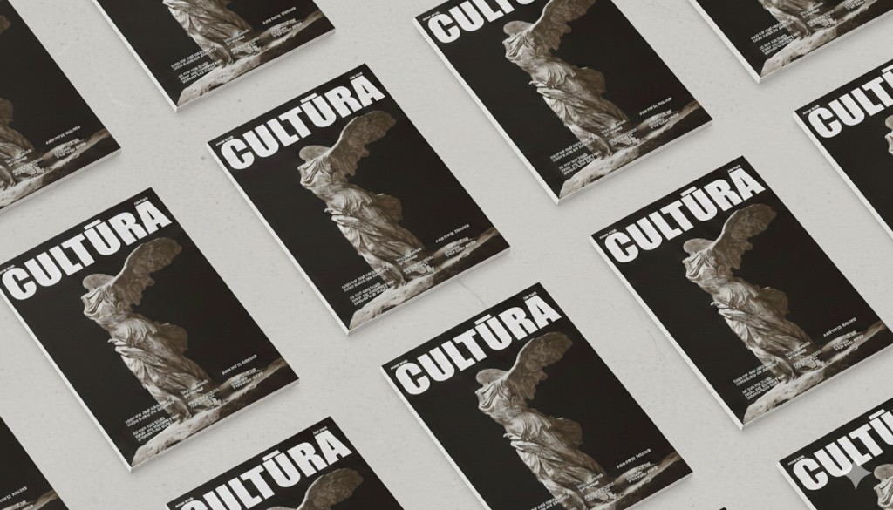
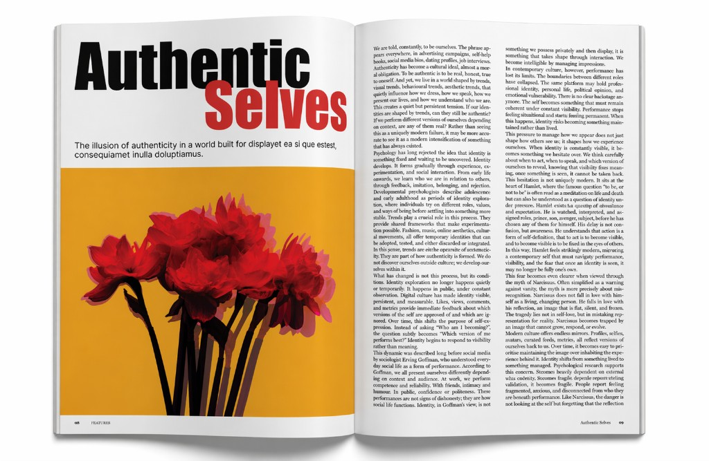
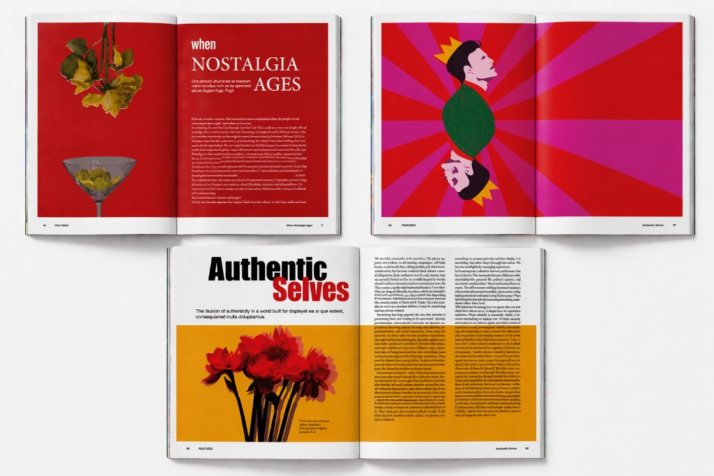

CULTŪRA
CULTŪRA is a conceptual editorial design project exploring how contemporary culture is shaped, repeated, and reinterpreted over time.
Through bold typography, classical references, and experimental layouts, the project examines themes such as nostalgia, trend cycles, and the way visual culture influences how we see ourselves today.
The design approach combines historical imagery with a modern editorial language, using contrast, scale, and material-inspired visuals to create a strong narrative identity.


